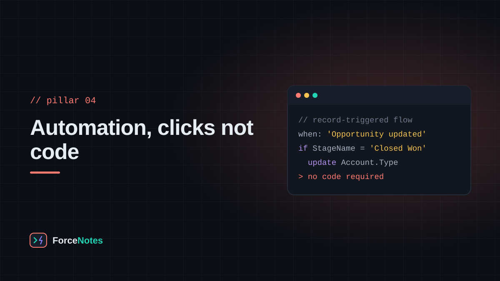
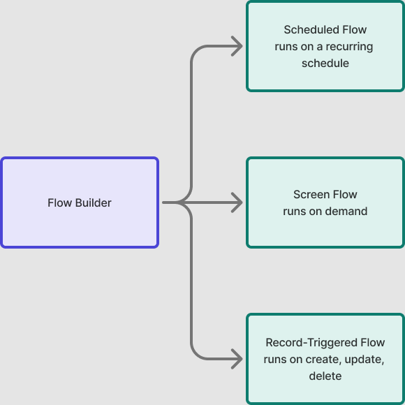

Most business logic on the platform should never need Apex. The declarative toolkit — Flow, Validation Rules, Approval Processes — covers the overwhelming majority of real requests, and it's the first place to look before writing code.

Declarative automation runs inside the platform's own guardrails, is visible to any admin who opens Flow Builder (no reading code required), and doesn't count against the same limits Apex does. The practical rule most experienced admins follow: reach for a Flow before you reach for a trigger, and only write Apex when the Flow genuinely can't do it.
Flow is the modern, unified automation tool, and it comes in a few flavors depending on when it should run:

A Validation Rule is a formula that, when it evaluates to TRUE, blocks the save and shows an error message. For example, a rule on Opportunity might read CloseDate < TODAY() to stop anyone from saving a deal with a close date in the past. Validation rules are the platform's way of enforcing data quality before a record ever reaches the database.
An Approval Process automates a multi-step sign-off — a discount over a threshold routes to a manager, then to finance, before an Opportunity can close. Each step can lock fields, notify approvers, and take a different automated action depending on whether it's approved or rejected.
Every automation tool on an object shares the same save event, and they don't always play nicely stacked ten deep — the order flows, validation rules, and triggers fire in is fixed by the platform, and untangling "why did this field change twice" on a record with layers of automation is a real skill. Keep it simple while you're still learning: one Record-Triggered Flow per object per event is a reasonable starting discipline.